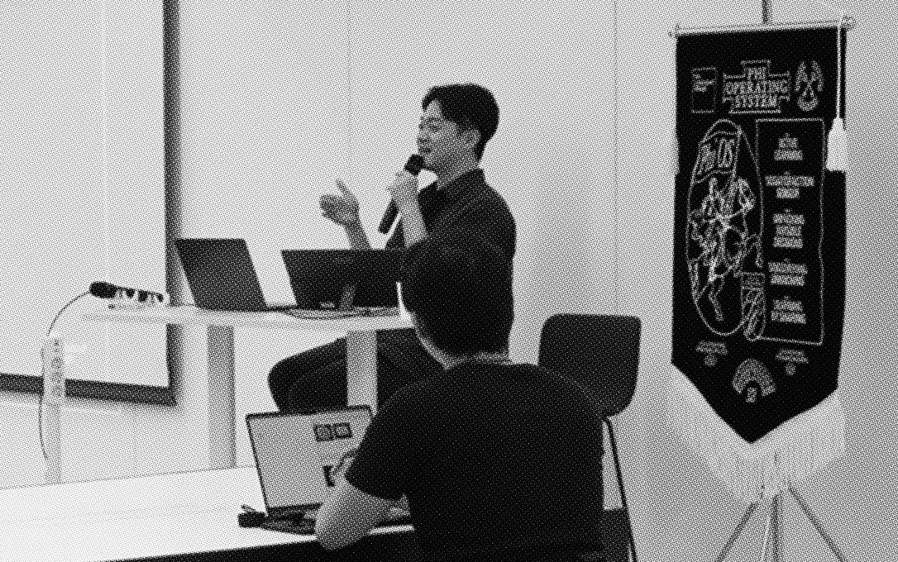
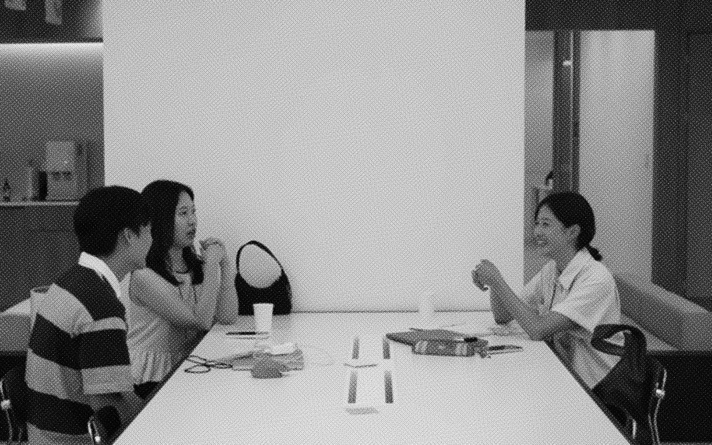
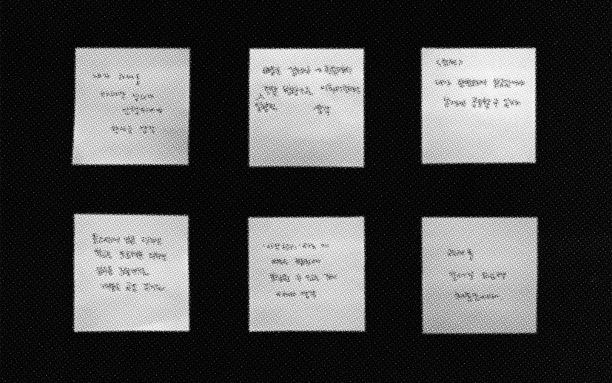
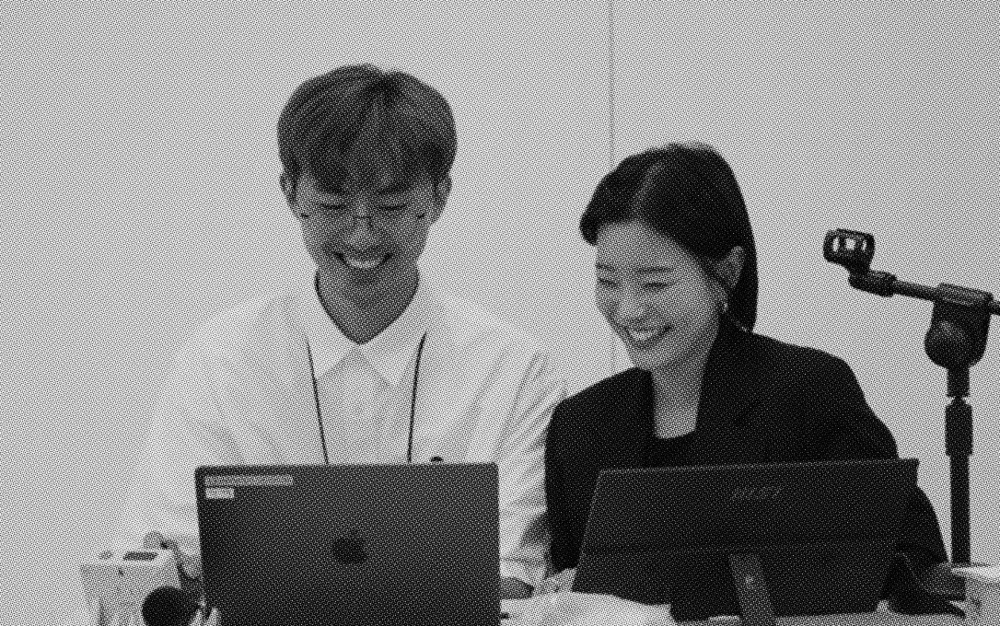
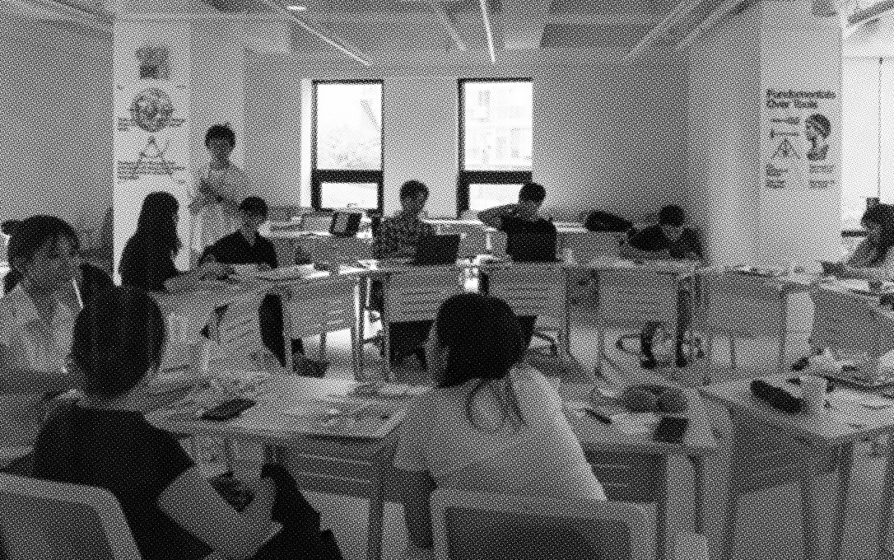
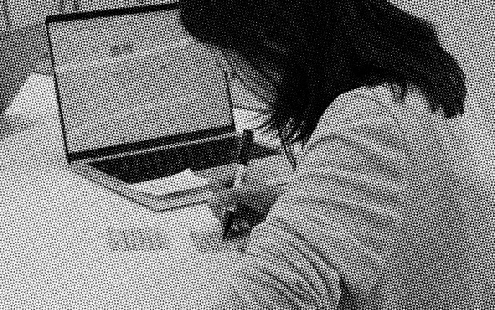

- Iterative Problem Solving
- Visual Translation
- Typography as Foundation
- Beautiful Interface
- Art of Reading
- Interviewing as Exploration
- Engaging with AI
- Self Introduction
- Readable Writing
- Peer Coaching
- Aesthetic Literacy
- What If
12 MonthsPrograms 12 CoursesPreview
1년제 프로그램은 연령, 직군, 경력을 제한하지 않습니다. 디자인을 더 깊이 이해하고 싶은 사람, 방향을 다시 잡고 싶은 사람, 스스로 만들고 출시할 수 있는 기반을 갖추고 싶은 사람. 어느 지점에서 출발하든, 디자인에 진지한 태도를 가진 분이라면 지원할 수 있습니다.
- 과정 기간
- 1년 (2학기)
- 총 시수
- 약 1,000시간+
- 수업 방식
- 월-금 전일제 오프라인
- 학습자 규모
- 60명 (30명씩 2개 분반)
- 개강
- 2026년 8월 24일
인재상
도구는 빠르게 바뀝니다. Phi는 도구보다 사고방식에 집중합니다. 탁월한 인재는 어떤 조건에도 적용할 수 있는 자신만의 성공 방정식을 갖고 있습니다. 이 인재를 벡터형 인재라 부릅니다. 1년제 프로그램은 벡터형 인재가 가진 역량과 태도를 학습하고, 나아가 주체적으로 자신만의 역량과 태도를 만들어갑니다.
역량 Competency
심미안Aesthetic Sense
디자이너에게 가장 중요한 역량을 고르라면 아름다움을 인식하는 능력 아닐까요? 대상을 보았을 때 구체적으로 부분을 인식하고, 미추를 판단하며, 그 미추의 정도를 가늠할 수 있는 예리한 감각을 훈련합니다.
언어화Articulation
언어는 곧 사고의 천장입니다. 자신이 다룰 수 있는 어휘의 질과 양이 나의 사고방식의 높이를 결정합니다. 타인에게 자신의 생각을 전달하는 것은 물론, 스스로를 설득할 수 있는 언어 체계를 갖춥니다.
구조화Structural Thinking
나무를 보는 것만큼 숲을 보는 일도 중요합니다. 구체와 추상을 오가며 현재 다루고 있는 문제가 전체 그림에서 어느 위치성을 지니는지 이해하고, 파편화된 분야들을 하나로 엮어내는 구조적 사고를 훈련합니다.
문제 정의Problem Definition
많은 디자인이 실패하는 이유는 틀린 문제를 풀었기 때문입니다. 증상을 문제로 오독하지 않고, 본질이 무엇인지 파악함으로써 정확한 문제 정의를 추구합니다.
관점 전환Reframing
혁신적인 해결책은 같은 문제를 다른 관점으로 바라보았을 때 나옵니다. 특정 문제를 그 분야의 문법으로만 정의하는 것이 아니라, 다른 분야의 레퍼런스도 자신의 문제에 적용할 수 있는 관점을 지니기 위해 유연한 관점 전환을 훈련합니다.
태도 Phi OS
능동적으로 학습하기Active Learning
Phi의 전체 교육 과정은 학습자의 능동성을 중요시합니다. 교사는 가르치고, 학생은 배우는 구조가 아닌 학습자 스스로 동기를 부여하고 배움을 설계하는 방식을 전제로 합니다.
무지를 발굴하기Discovering Unknowns
Phi에서는 질문하는 것, 못하는 상태에서 내 결과물을 내놓는 것을 권장합니다. 자신의 현재 상태를 꺼내놓음으로써 자신이 정확하게 무엇을 모르는지 발견할 수 있는 기회가 되기 때문입니다.
압축된 사고 분석하기Unpacking the Compression
사고 과정을 관찰하는 훈련이 되어있다면, 교실은 물론 교실 밖 일상에서도 전문성을 추출해낼 수 있습니다. Phi에서는 지식을 전달 받기를 기다리지 않고, 먼저 추출하는 태도와 기술을 연습합니다.
불만족에 민감해지기Dissatisfaction Sensor
문제 정의의 출발은 문제 감지에서 시작됩니다. 완성도를 타협하지 않는 이들은 쉽게 만족하지 않고 불만족을 민감하게 알아차립니다. 좋은 것을 만들기 위해서는 좋지 않음을 느낄 수 있어야 합니다.
공유하며 배우기Learning by Sharing
가장 잘 배우는 방법은 남에게 가르쳐 보는 것입니다. 이미 충분히 이해했다고 생각하는 것도 타인에게 설명하고, 설득해보면 공백이 있다는 것을 깨닫게 됩니다. 이 메커니즘을 이해하고, 자신의 지식을 적극적으로 공유할 수 있어야 합니다.
주요 수업
상기된 역량과 태도를 중심으로 수업이 설계되었습니다. 하기된 주요 수업은 1학기에 진행되는 수업입니다. 2학기는 1학기의 성취에 따라 학습 효과를 보완하고 증폭할 수 있는 방향으로 준비됩니다. 이를 통해 디지털 프로덕트 디자인과 브랜딩 분야에서 자신의 가능성을 펼칠 수 있도록 합니다.
Fundamental
한 분야의 핵심 원리를 전문가와 함께 오래 다지는 수업입니다. 사고방식 위주의 기본기를 학습할 때는 지식을 습득하는 것은 물론, 다양한 맥락에서 적용이 필요하기 때문에 긴 호흡으로 진행합니다.
Domain
기본기를 단기간에 습득할 수 있는 단위로 쪼개어서 경험하는 수업입니다. 여러 주제를 들어보면서 나에게 더 맞는 주제가 있다면 이후에 심화하여 학습할 수 있습니다.
Ritual
학습 목표에 따라 단기간에 집중적인 학습이 필요한 코스가 있고, 간격을 두고 다른 일과를 수행하면서 배우면 효과적인 코스가 있습니다. Ritual은 후자의 수업으로, 반복적인 훈련과 습관화가 필요한 종류의 내용을 배웁니다.
Study
전문가 없이 학습자끼리 학습하는 수업입니다. 궁극적으로 학습자들은 스스로 배울 수 있는 상태가 되어야 합니다. Phi에서는 학습자의 자율적 학습도 배워야 할 대상으로 여기며, 이를 위해 Learning Design팀이 지원을 제공합니다.
수업 장치
Phi의 교육은 인지적 도제(Cognitive Apprenticeship)를 토대로 설계되었습니다. 전문가의 사고 과정을 학습자가 능동적으로 관찰할 수 있도록 다양한 장치가 준비되어있습니다.
라이브데모

전문가가 학습자의 과제를 실시간으로 푸는 과정을 시연합니다. 푸는 과정에서 '나라면?'이라는 문두를 활용하여 학습자와 전문가의 차이가 나는 지점을 직접적으로 드러냅니다.
피어크리틱

모든 코스에는 관찰 가능한 평가 기준, 즉 루브릭이 있습니다. 전문가는 매주 Learning Design팀과 학습자의 결과물을 리뷰하고, 루브릭 기반으로 주로 하는 실수 패턴을 정의합니다. 학습자는 매 세션 이 패턴을 기준으로 구체적인 피드백을 주고받습니다.
저널링

매주 혹은 매일 배운 점이나 느낀 점 등을 4F(Fact/Feeling/Finding/Future Item)양식으로 회고합니다. 스스로 수업을 정리해보기도 하고, 동기의 저널링을 보면서 깨달음이나 동기를 얻기도 합니다. 쌓인 저널링은 학기별로 Phi만의 회고 방식을 담은 러닝 리포트로 정리해 드립니다.
워크숍

정해진 코스 외에도, 학기 중 학습자의 이해도를 높이는 워크숍이 열립니다. 주제는 다양하고, 매 기수 학습자들의 상태를 반영합니다. 예를 들어 Phi의 세션은 시연 위주라 능동적 관찰이 중요한데, 전문가의 암묵지를 분석하고 분해하는 법은 코스 밖 워크숍에서 따로 배웁니다.
공유회

가장 잘 배우는 방법은 남에게 가르쳐보는 것입니다. 워크숍은 매회 정해진 인원만 들을 수 있습니다. 서로 다른 주제의 워크숍을 들은 동기들은 자연스럽게 배운 것을 나눕니다. 설명하는 사람은 자신이 이해하지 못한 부분을 발견하고, 듣는 사람은 놓친 주제를 얻으면서 자발적인 공유회가 일어납니다.
셀프피드백

Phi에는 별도의 평가 시스템이 없습니다. 하지만, 전문가와 동일한 기준으로 자신의 작업을 판단할 수 있도록, 시작 전과 진행 중 매주, 학습 목표를 어느 정도 달성했고 그 이유가 무엇인지 루브릭 기반으로 작성합니다. 코스가 끝난 뒤에는 시작 전과 후의 자신을 현재의 언어로 다시 평가합니다.
연간 구조
1학기와 2학기로 나뉘어 성수 오프라인 공간에서 월-금 전일제로 약 1,000시간 이상 수업이 진행됩니다. 학기 사이에는 방학 캠프가 준비되어 있습니다. 2학기까지 모든 수업을 이수하고 졸업 프로젝트를 완성한 후 1년제 프로그램을 졸업합니다.
-
4개월2026/08/24 - 2026/12/24
101112131415161718세션 110:00 - 13:00세션 310:00 - 13:00세션 510:00 - 13:00세션 710:00 - 13:00세션 910:00 - 13:00점심 시간13:00 - 15:00세션 215:00 - 18:00세션 415:00 - 18:00세션 615:00 - 18:00세션 815:00 - 18:00세션 1015:00 - 18:002개월2027/01 - 2027/02
4개월의 학기 루틴에서 벗어나 휴식과 함께 진행되는 워크숍 프로그램입니다. 각 학습자의 성취와 보완이 필요한 부분을 바탕으로 구성됩니다. 캠프는 별도 비용 없이 희망자 모두 참석할 수 있습니다.
토스 디자인 헤드와의실전 캠프
토스 디자인 헤드들과 함께 토스의 실제 과제들을 Phi의 방식으로 풀어보고 결과물을 토스 디자인 헤드들과 공유합니다. Phi에서 1학기 동안 배운 것들이 실제로 어떻게 각자의 성장에 기폭제가 되었는지 선명하게 확인할 수 있는 시간입니다.
한국타이포그라피학회와의디지털 타이포그래피 워크숍
한국타이포그라피학회의 실무 디렉터들과 함께하는 워크숍입니다. 웹, 앱, 다양한 디바이스 환경에서 타이포그래피가 가져야 할 심미화, 언어화, 구조화를 탐구합니다.
도구 탐구 워크숍Skills Boost
1학기 동안 각 학습자의 필요를 반영해 구성되는 도구 탐구 워크숍입니다. 학습자 개인의 성장 곡선에 맞춰 운영됩니다.
4개월2027/03/02 - 2027/06/24
1학기에서 쌓은 역량을 심화하고 통합하는 시간입니다. 전문가 라인업이 일부 교체되며, 학습자가 자신만의 방향을 구체화합니다.
101112131415161718세션 110:00 - 13:00세션 310:00 - 13:00세션 510:00 - 13:00세션 710:00 - 13:00세션 910:00 - 13:00점심 시간13:00 - 15:00세션 215:00 - 18:00세션 415:00 - 18:00세션 615:00 - 18:00세션 815:00 - 18:00세션 1015:00 - 18:002개월2027/07 - 2027/08
모든 수업을 이수해야 수료를 할 수 있고, 수료 후 졸업 프로젝트를 완성해야 졸업을 할 수 있습니다. 졸업자는 토스의 별도 채용 전형에 지원할 수 있습니다.
수료
2026년 8월부터 2027년 6월까지 1학기와 2학기에 예정된 모든 수업을 이수해야 합니다.
졸업
수료 조건 달성 후, 2027년 7월부터 8월까지 개인별 목표에 따른 졸업 프로젝트를 완성해야 합니다. 프로젝트는 외부에 실제로 발표 또는 출시되어야 합니다.
토스 채용 연계
2027년 8월, Phi 1년제 프로그램 졸업자를 위한 토스의 별도 채용 전형이 마련됩니다. 우수 졸업자에게는 채용 전형에 더해 별도의 입사 특전이 제공됩니다.